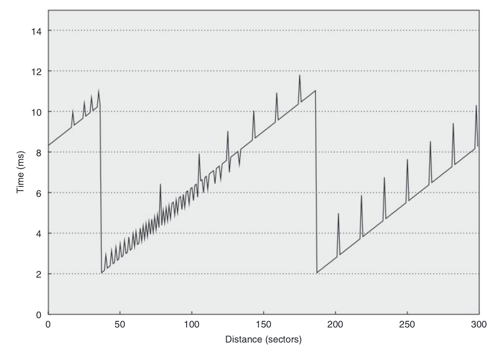
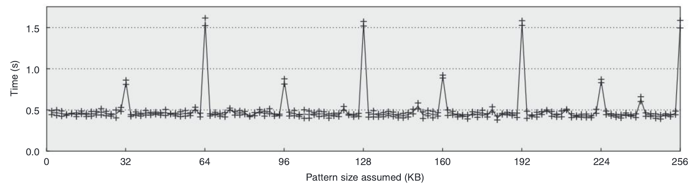
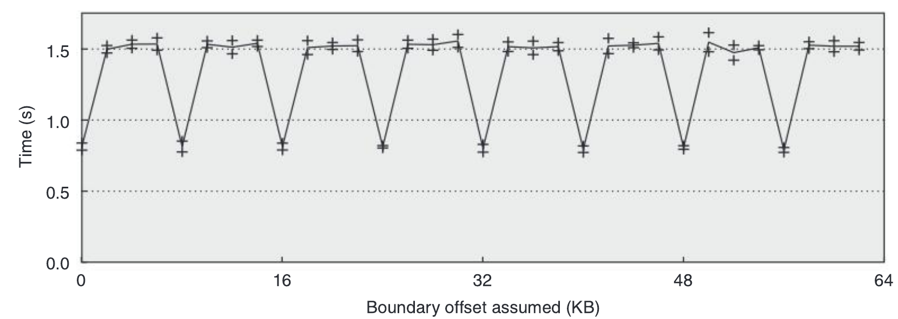
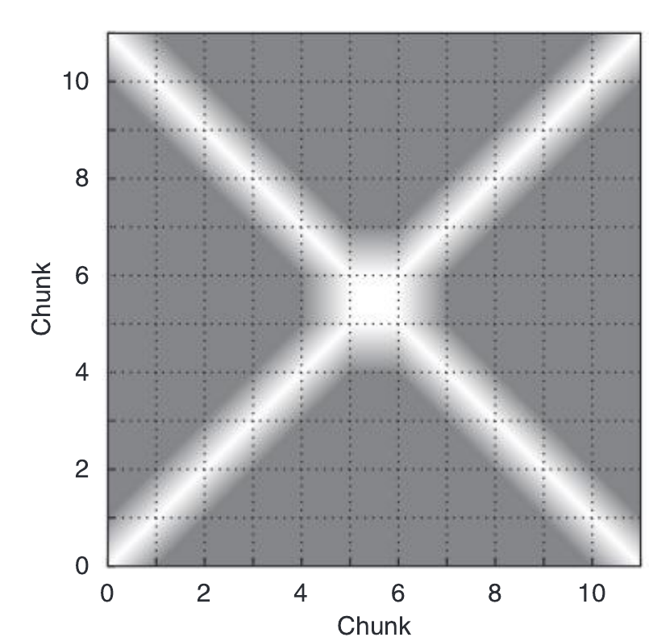
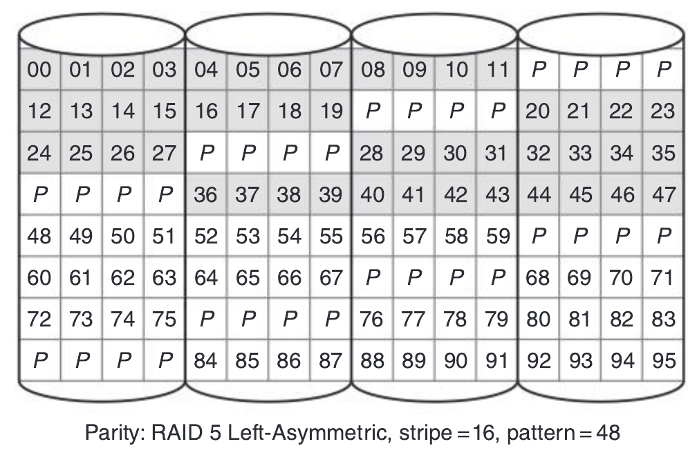

案例研究与习题（Andrea C. Arpaci-Dusseau、Remzi H. Arpaci-Dusseau）
案例研究 1：解构一块磁盘
本案例研究涉及的概念
- 性能特征
- 微基准测试程序
存储系统的内部细节往往隐藏在一个简单的接口后面，即一个线性的块数组。所有存储系统共用一种接口有很多好处：操作系统不用修改就能使用任何存储系统，存储系统也可以在接口后面自由创新。例如，一块磁盘可以按性能最好的方式，把内部的〈扇区，磁道，盘面〉几何结构映射到线性数组上；同样，多磁盘的 RAID 系统也可以把任意多块磁盘上的块映射到这个线性数组上。不过，这种固定的接口也有一些缺点。特别是，操作系统不知道自己的块在底层存储系统中的确切布局，因此无法做某些性能、可靠性和安全方面的优化。
在这个案例研究中，我们探讨怎样用软件揭示存储系统藏在块接口后面的内部结构。基本思路是给存储系统采集指纹：在存储系统上运行一个明确定义的负载，测量各种请求所需的时间，就能推断出底层系统的大量细节，其数量之多出人意料。
Skippy 算法出自加州大学伯克利分校 Nisha Talagala 及其同事的工作，用来揭示单块磁盘的参数。算法的关键是排除磁盘旋转的影响，办法是连续寻道到一个个扇区，相邻两次访问的扇区地址之差线性增加（依次为 1、2、3，等等）。因此，基本算法在磁盘上跳跃前进，每次写之前把寻道距离增加一个扇区，并输出每次写的距离和时间。算法使用裸设备接口，以避开文件系统的优化。SECTOR_SIZE 设为一次能从磁盘读出的最小数据量（例如 512 字节）。（Talagala 和 Patterson［1999］对 Skippy 有更详细的描述。）
fd = open("raw disk device");
for (i = 0; i < measurements; i++) {
begin_time = gettime();
lseek(fd, i*SECTOR_SIZE, SEEK_CUR);
write(fd, buffer, SECTOR_SIZE);
interval_time = gettime() -begin_time;
printf("Stride: %d Time: %d\n", i, interval_time);
}
close(fd);以寻道距离为横坐标，画出每次写所需的时间，就能推断出最小传输时间（不含寻道延迟和旋转延迟）、磁头切换时间、柱面切换时间、旋转延迟，以及磁盘的磁头数。典型的图上有四条截然分开的直线，斜率相同，偏移量不同。最高和最低两条线对应的请求，旋转延迟各不相同，但都没有柱面切换或磁头切换的开销，两条线之差就是磁盘的旋转延迟。倒数第二条线对应的请求，除了逐渐增加的旋转延迟，还有一次磁头切换。最后，第三条线对应的请求，除了旋转延迟，还有一次柱面切换。
D.1 [10/10/10/10/10] <D.2> 在一块假想的磁盘（Disk Alpha）上运行 Skippy 的结果见图 D.25。
a. [10] <D.2> 最小传输时间是多少？
b. [10] <D.2> 旋转延迟是多少？
c. [10] <D.2> 磁头切换时间是多少？
d. [10] <D.2> 柱面切换时间是多少？
e. [10] <D.2> 磁头数是多少？

D.2 [25] <D.2> Disk Beta 是一块具有下列参数的磁盘。在 Disk Beta 上运行 Skippy，画出所得曲线的大致形状。
- 最小传输时间：2.0 ms
- 旋转延迟：6.0 ms
- 磁头切换时间：1.0 ms
- 柱面切换时间：1.5 ms
- 磁头数：4
- 每道扇区数：100
D.3 [10/10/10/10/10/10/10] <D.2> 自选一块磁盘驱动器，实现并运行 Skippy 算法。
a. [10] <D.2> 把运行 Skippy 的结果画成曲线，并写明磁盘的生产厂商和型号。
b. [10] <D.2> 最小传输时间是多少？
c. [10] <D.2> 旋转延迟是多少？
d. [10] <D.2> 磁头切换时间是多少？
e. [10] <D.2> 柱面切换时间是多少？
f. [10] <D.2> 磁头数是多少？
g. [10] <D.2> 在真实磁盘上运行 Skippy 的结果，与假想磁盘的结果相比，在性质上有没有不同？
案例研究 2：解析磁盘阵列
本案例研究涉及的概念
- 性能特征
- 微基准测试程序
Shear 算法用来探明 RAID 系统的参数，出自威斯康星大学 Timothy Denehy 等人的工作［Denehy et al. 2004］。基本思路是：向 RAID 阵列发出一组请求并计时，看哪几组请求用时较长，就能推断出哪些块分配在同一块磁盘上。
先定义 RAID 的几个属性。RAID 以块为单位把数据分配到各磁盘上。所谓块，就是文件系统从存储系统读写数据的最小单位，因此块的大小对文件系统和指纹识别软件都是已知的。条块（chunk）是在一块磁盘内连续分配的一组块。条带由分布在 \(D\) 块数据盘上的各一个条块组成。最后，模式（pattern）是满足下面条件的最短数据块序列：模式内偏移为 \(i\) 的块总是位于磁盘 \(j\) 上。
D.4 [20/20] <D.2> 下面的代码可以探明模式的大小。为了避开文件系统的优化，代码直接访问裸设备。所有 Shear 算法的关键都是使用随机请求，以免触发 RAID 内部或单块磁盘内部的任何预取或缓存机制。这段代码的基本思路是：在 RAID 阵列中以固定间隔 \(p\) 访问 \(N\) 个随机块，测出每种间隔下的完成时间。
for (p = BLOCKSIZE; p <= testsize; p += BLOCKSIZE) {
for (i = 0; i < N; i++) {
request[i] = random()*p;
}
begin_time = gettime();
issues all request[N] to raw device in parallel;
wait for all request[N] to complete;
interval_time = gettime() - begin_time;
printf("PatternSize: %d Time: %d\n", p,
interval_time);
}在 RAID 阵列上运行这段代码，把 \(N\) 个请求的实测时间画成随 \(p\) 变化的曲线，就会看到：\(N\) 个请求全部落在同一块磁盘上时，时间最长。因此，时间最长处的 \(p\) 值就对应 RAID 的模式大小。

a. [20] <D.2> 图 D.26 是在一个未知 RAID 系统上运行模式大小算法的结果。
- 这个存储系统的模式大小是多少？
- 实测时间 0.4 秒、0.8 秒和 1.6 秒在这个存储系统中各对应什么情况？
- 如果这是一个 RAID 0 阵列，那么它有几块磁盘？
- 如果这是一个 RAID 0 阵列，那么条块大小是多少？
b. [20] <D.2> 在具有下列特征的存储系统上运行这段 Shear 代码，画出所得的曲线：
- 请求数 \(N=1000\)
- 磁盘上一次随机读的时间：5 ms
- RAID 级别：RAID 0
- 磁盘数：4
- 条块大小：8 KB
D.5 [20/20] <D.2> 下面的代码可以探明条块的大小。基本思路是：从随机选取的 \(N\) 个模式中读数据，但读的总是模式内两个受控的偏移位置 \(c\) 和 \(c-1\)。
for (c = 0; c < patternsize; c += BLOCKSIZE) {
for (i = 0; i < N; i++) {
requestA[i] = random()*patternsize + c;
requestB[i] = random()*patternsize +
(c-1)%patternsize;
}
begin_time = gettime();
issue all requestA[N] and requestB[N] to raw device
in parallel;
wait for requestA[N] and requestB[N] to complete;
interval_time = gettime() - begin_time;
printf("ChunkSize: %d Time: %d\n", c,
interval_time);
}
运行这段代码，把实测时间画成随 \(c\) 变化的曲线，就会看到：requestA 和 requestB 两组读落在两块不同的磁盘上时，实测时间最短。因此，时间较短处的 \(c\) 值就对应 RAID 中磁盘之间的条块边界。
a. [20] <D.2> 图 D.27 是在一个未知 RAID 系统上运行条块大小算法的结果。
- 这个存储系统的条块大小是多少？
- 实测时间 0.75 秒和 1.5 秒在这个存储系统中各对应什么情况？
b. [20] <D.2> 在具有下列特征的存储系统上运行这段 Shear 代码，画出所得的曲线：
- 请求数 \(N=1000\)
- 磁盘上一次随机读的时间：5 ms
- RAID 级别：RAID 0
- 磁盘数：8
- 条块大小：12 KB
D.6 [10/10/10/10] <D.2> 最后，下面的代码可以确定条块在各磁盘上的布局。基本思路是：随机选取 \(N\) 个模式，穷举模式内条块的所有两两组合，每次把一对条块放在一起读。
for (a = 0; a < numchunks; a += chunksize) {
for (b = a; b < numchunks; b += chunksize) {
for (i = 0; i < N; i++) {
requestA[i] = random()*patternsize + a;
requestB[i] = random()*patternsize + b;
}
begin_time = gettime();
issue all requestA[N] and requestB[N] to raw device
in parallel;
wait for all requestA[N] and requestB[N] to
complete;
interval_time = gettime() - begin_time;
printf("A: %d B: %d Time: %d\n", a, b,
interval_time);
}
}运行这段代码后，可以给出实测时间随 \(a\) 和 \(b\) 变化的结果。最简单的画法是做一张以 \(a\) 和 \(b\) 为两个参数的二维表，把时间换算成灰度：时间较短用较深的颜色，时间较长用较浅的颜色。因此，颜色浅说明模式内的两个偏移 \(a\) 和 \(b\) 落在同一块磁盘上。
已知某存储系统的模式大小为 384 KB，条块大小为 32 KB。图 D.28 是在这个存储系统上运行布局算法的结果。
a. [20] <D.2> 一个模式中有多少个条块？
b. [20] <D.2> 每个模式中，哪些条块看来分配在同一块磁盘上？
c. [20] <D.2> 这个存储系统看来有几块磁盘？
d. [20] <D.2> 画出各块在磁盘上可能的布局。
D.7 [20] <D.2> 在图 D.29 所示的存储系统上运行布局算法，画出所得的图。这个存储系统有四块磁盘，条块大小为 4 个 4 KB 的块（16 KB），采用 RAID 5 Left-Asymmetric 布局。


案例研究 3：RAID 重建
本案例研究涉及的概念
- RAID 系统
- RAID 重建
- 平均无故障时间（MTTF）
- 平均数据丢失时间（MTDL）
- 性能可用性
- 双重失效
RAID 系统能保证一块磁盘失效时数据不丢失。因此，RAID 的一项关键职责是：某块磁盘失效后，把它上面原有的数据重新构造出来。这个过程称为重建（reconstruction），本案例研究就来探讨它。我们既要考虑能容忍一块磁盘失效的 RAID 系统，也要考虑能容忍两块磁盘失效的 RAID-DP。
重建通常有两种做法。离线重建时，RAID 把全部资源都用于重建，不响应负载的任何请求。在线重建时，RAID 一边重建，一边继续响应负载的请求，重建过程通常只允许使用 RAID 系统总带宽的一部分。
重建的方式既影响系统的可靠性，也影响系统的性能可用性（performability）。在 RAID 5 中，如果第一块失效磁盘的数据还没有恢复，第二块磁盘又失效了，数据就会丢失；因此，重建时间（MTTR）越长，可靠性越低，也就是平均数据丢失时间（MTDL）越短。性能可用性是一个兼顾系统性能和可用性的指标，定义为系统在某一状态下的性能乘以系统处于这一状态的概率。RAID 阵列可能的状态包括：没有磁盘失效时正常运行，一块磁盘失效时进入重建，多块磁盘失效时停机。
做以下习题时，假定你构建了一个由六块磁盘组成的 RAID 系统，另有足够数量的热备盘。假定每块磁盘都是图 D.3 中的 37 GB SCSI 磁盘，顺序读的峰值速率为 142 MB/s，顺序写的峰值速率为 85 MB/s。磁盘连接在一条 Ultra320 SCSI 总线上，总线的总传输能力为 320 MB/s。可以假定各磁盘的失效相互独立，并忽略系统中其他可能的失效。重建时，可以假定 XOR 计算和内存复制的开销都忽略不计。在线重建时，假定重建过程最多只能使用 RAID 系统总计 10 MB/s 的带宽。
D.8 [10] <D.2> 假定你有一个由六块磁盘组成的 RAID 4 系统。画一张简图，表示这个 RAID 系统中各块在磁盘上的布局。
D.9 [10] <D.2, D.4> RAID 4 系统在一块磁盘失效时执行重建。预计要过多长时间才需要重建一次？
D.10 [10/10/10] <D.2, D.4> 假定 RAID 4 阵列的重建在时刻 \(t\) 开始。
a. [10] <D.2, D.4> 重建需要哪些读操作和写操作？
b. [10] <D.2, D.4> 采用离线重建，重建过程何时完成？
c. [10] <D.2, D.4> 采用在线重建，重建过程何时完成？
D.11 [10/10/10/10] <D.2, D.4> 本题研究平均数据丢失时间（MTDL）。在 RAID 4 中，只有在第一块失效磁盘修复之前第二块磁盘又失效，数据才会丢失。
a. [10] <D.2, D.4> 离线重建期间发生第二次失效的可能性有多大？
b. [10] <D.2, D.4> 已知重建期间发生第二次失效的可能性如上，离线重建的 MTDL 是多少？
c. [10] <D.2, D.4> 在线重建期间发生第二次失效的可能性有多大？
d. [10] <D.2, D.4> 已知重建期间发生第二次失效的可能性如上，在线重建的 MTDL 是多少？
D.12 [10] <D.2, D.4> 采用离线重建时，RAID 4 阵列的性能可用性是多少？假定负载是只读的随机访问，均匀分布在 RAID 4 阵列的各磁盘上，用 IOPS 计算性能可用性。
D.13 [10] <D.2, D.4> 采用在线重建时，RAID 4 阵列的性能可用性是多少？可以假定在线修复期间 IOPS 降为峰值的 70%。离线重建和在线重建，哪一种的性能可用性更好？
D.14 [10] <D.2, D.4> RAID 6 用来容忍最多两块磁盘同时失效。假定你有一个基于行-对角线奇偶校验（即 RAID-DP）的 RAID 6 系统，共六块磁盘，以 RAID 4 为基础，\(p=5\)，如图 D.5 所示。如果数据盘 0 和数据盘 3 失效，怎样重建这两块磁盘？写出计算前四个条带中缺失块所需的步骤序列。
案例研究 4：RAID 的性能预测
本案例研究涉及的概念
- RAID 级别
- 排队论
- 负载的影响
- 磁盘布局的影响
本案例研究探讨怎样用简单的排队论预测 I/O 系统的性能。我们将考察存储系统配置和负载怎样影响服务时间、磁盘利用率和平均响应时间。
存储系统的配置对性能影响很大。不同的 RAID 级别要用排队论以不同的方式建模。例如，含 \(N\) 块磁盘的 RAID 0 阵列，只要请求在 \(N\) 块磁盘上分布得当，就可以建模为 \(N\) 个独立的 M/M/1 队列系统。RAID 1 阵列的行为取决于负载：读操作可以发给任意一个镜像，写操作则必须发给两块磁盘。因此，对只读负载，两盘 RAID 1 阵列可以建模为一个 M/M/2 队列；对只写负载，则可以建模为一个 M/M/1 队列。含 \(N\) 块磁盘的 RAID 4 阵列的行为同样取决于负载：读操作发给某一块数据盘；写操作则都要更新校验盘，于是校验盘成了系统的瓶颈。因此，对只读负载，RAID 4 可以建模为 \(N-1\) 个独立的系统；对只写负载，则可以建模为一个 M/M/1 队列。
块在存储系统中的布局对性能也可能有很大影响。考虑一块容量为 40 GB 的磁盘。如果负载随机访问 40 GB 数据，这些块在磁盘上怎样布局对性能影响不大。但是，如果负载只随机访问磁盘容量的一半（即这块磁盘上的 20 GB 数据），布局就有影响了：为了缩短寻道时间，可以把这 20 GB 数据紧凑地存放在 20 GB 的连续磁道上，而不是均匀地分散在整个 40 GB 容量上。
本题用一个相当简化的模型估算磁盘的服务时间。在这个基本模型中，一个小的随机请求的平均定位与传输时间，是寻道距离的线性函数。对本题中的 40 GB 磁盘，假定服务时间为 5 ms × 空间利用率。因此，如果整块 40 GB 磁盘都在使用，随机请求的平均定位与传输时间为 5 ms；如果只用磁盘的前 20 GB，平均定位与传输时间为 2.5 ms。
在整个案例研究中，可以假定处理器每秒发出 167 个小的随机磁盘请求，这些请求服从指数分布。可以假定请求大小等于块大小，即 8 KB。系统中每块磁盘的容量为 40 GB。无论存储系统怎样配置，负载访问的数据总量都是 40 GB；你应当以最高效的方式把这 40 GB 数据分配到系统中的各磁盘上。
D.15 [10/10/10/10/10] <D.5> 首先假定存储系统只有一块 40 GB 磁盘。
a. [10] <D.5> 对这种负载和存储系统，平均服务时间是多少？
b. [10] <D.5> 磁盘的平均利用率是多少？
c. [10] <D.5> 每个请求平均要花多少时间等待磁盘？
d. [10] <D.5> 队列中的平均请求数是多少？
e. [10] <D.5> 最后，磁盘请求的平均响应时间是多少？
D.16 [10/10/10/10/10/10] <D.2, D.5> 设想存储系统现在配置成由两块 40 GB 磁盘组成的 RAID 0 阵列，也就是数据以 8 KB 的块为单位均匀地条带化分布在两块磁盘上，没有冗余。
a. [10] <D.2, D.5> 40 GB 数据怎样分配到两块磁盘上？对总计 40 GB 范围内的随机请求负载，每个请求的预期服务时间是多少？
b. [10] <D.2, D.5> 怎样用排队论为这个存储系统建模？
c. [10] <D.2, D.5> 每块磁盘的平均利用率是多少？
d. [10] <D.2, D.5> 每个请求平均要花多少时间等待磁盘？
e. [10] <D.2, D.5> 每个队列中的平均请求数是多少？
f. [10] <D.2, D.5> 最后，磁盘请求的平均响应时间是多少？
D.17 [20/20/20/20/20] <D.2, D.5> 再设想存储系统配置成由两块 40 GB 磁盘组成的 RAID 1 阵列，也就是数据在两块磁盘上互为镜像。对只读负载，用排队论为这个系统建模。
a. [20] <D.2, D.5> 40 GB 数据怎样分配到两块磁盘上？对总计 40 GB 范围内的随机请求负载，每个请求的预期服务时间是多少？
b. [20] <D.2, D.5> 怎样用排队论为这个存储系统建模？
c. [20] <D.2, D.5> 每块磁盘的平均利用率是多少？
d. [20] <D.2, D.5> 每个请求平均要花多少时间等待磁盘？
e. [20] <D.2, D.5> 最后，磁盘请求的平均响应时间是多少？
D.18 [10/10] <D.2, D.5> 设想 RAID 1 阵列上的负载不再是只读的，而是只写的。
a. [10] <D.2, D.5> 说明怎样用排队论为这个系统和负载建模。
b. [10] <D.2, D.5> 对这个系统和负载，平均利用率、平均等待时间和平均响应时间各是多少？
案例研究 5：I/O 子系统设计
本案例研究涉及的概念
- RAID 系统
- 平均无故障时间（MTTF）
- 性能与可靠性的权衡
在本案例研究中，你要在给定的资金预算内设计一个 I/O 子系统。系统有最低容量要求，优化目标可以是性能、可靠性，或两者兼顾。只要不超出预算，磁盘和控制器想用多少都可以。
可用的部件如下：
- 一个 10,000 MIPS 的 CPU，价格 1000 美元，MTTF 为 1,000,000 小时。
- 一条 1000 MB/s 的 I/O 总线，可以容纳 20 条 Ultra320 SCSI 总线及其控制器。
- Ultra320 SCSI 总线，传输能力为 320 MB/s，每条总线最多支持 15 块磁盘（这种总线也称为 SCSI 串）。SCSI 电缆的 MTTF 为 1,000,000 小时。
- 一个 Ultra320 SCSI 控制器，每秒能处理 50,000 次 I/O（IOPS），价格 250 美元，MTTF 为 500,000 小时。
- 一个机箱，价格 2000 美元，最多可为 8 块磁盘供电和散热。机箱的 MTTF 为 1,000,000 小时，风扇的 MTTF 为 200,000 小时，电源的 MTTF 为 200,000 小时。
- 图 D.3 所列的 SCSI 磁盘。
- 更换任何一个出故障的部件都需要 24 小时。
关于工作负载，可以作以下假定：
- 每次磁盘 I/O，操作系统需要执行 70,000 条 CPU 指令；
- 工作负载由大量并发的随机 I/O 组成，平均大小为 16 KB。
构建的所有系统都必须满足以下条件：
- 资金预算为 28,000 美元；
- 容量至少为 1 TB。
D.19 [10] <D.2> 首先设计一个 I/O 子系统，只针对容量和性能优化，不考虑可靠性；这里的性能具体指 IOPS。讨论采用哪种 RAID 级别和块大小能获得最好的性能。
D.20 [20/20/20/20] <D.2, D.4, D.7> 在资金和容量的约束下，SCSI 磁盘、控制器和机箱怎样配置，性能最好？
a. [20] <D.2, D.4, D.7> 你的系统预计能提供多少 IOPS？
b. [20] <D.2, D.4, D.7> 你的系统造价多少？
c. [20] <D.2, D.4, D.7> 你的系统容量是多少？
d. [20] <D.2, D.4, D.7> 你的系统的 MTTF 是多少？
D.21 [10] <D.2, D.4, D.7> 现在重新设计系统，改为针对可靠性优化，组成 RAID 10 或 RAID 01 阵列。存储系统不仅要能承受磁盘故障，还要能承受控制器、电缆、电源和风扇的故障。具体来说，任何一个部件出故障，都不能使一对副本同时无法访问。画图说明在 RAID 10 和 RAID 01 两种配置下，数据块怎样分布到各个磁盘上。在这种环境下，RAID 10 和 RAID 01 哪一种更合适？
D.22 [20/20/20/20/20] <D.2, D.4, D.7> 只针对可靠性优化 RAID 10 或 RAID 01 阵列（但仍要满足容量和资金的约束），你的 RAID 配置是什么样的？
a. [20] <D.2, D.4, D.7> 系统中各部件合起来的总 MTTF 是多少？
b. [20] <D.2, D.4, D.7> 你的系统的 MTDL 是多少？
c. [20] <D.2, D.4, D.7> 这个系统的可用容量是多少？
d. [20] <D.2, D.4, D.7> 你的系统造价多少？
e. [20] <D.2, D.4, D.7> 假定工作负载只有写操作，预计能提供多少 IOPS？
D.23 [10] <D.2, D.4, D.7> 假定现在能买到一种新磁盘，价格不变，容量是原来的 2 倍。如果仍然只针对可靠性设计，存储系统的配置要怎样改？为什么？
案例研究 6：烂掉的位
本案例研究涉及的概念
- 磁盘局部失效
- 失效分析
- 性能分析
- 奇偶校验保护
- 校验和
你的任务是防止出现「位腐烂」（bit rot），即文件中的位或块随时间推移而损坏。这个问题在归档场景中尤其重要：数据写入一次，也许多年以后才再次访问。如果不采取额外措施保护数据，介质错误或其他 I/O 故障可能使文件中的位或块慢慢发生变化，或者变得无法访问。
对付位腐烂需要两个环节：一是检测，二是恢复。要高效地检测位腐烂，可以对文件的每个块计算校验和。校验和就是某种函数：输入一串（可能很长的）数据，输出一个固定长度的串，即这串数据的校验和。要利用的性质是：数据一旦变化，算出的校验和很可能也随之变化。
检测到位腐烂以后，要恢复数据就需要某种形式的冗余，例如镜像（每个块保存多个副本）和奇偶校验（另加一些冗余信息，通常比镜像节省空间）。
在本案例研究中，你将分析这些技术在各种情形下的效果，还要编写代码，为一组文件提供数据完整性保护。
D.24 [20/20/20] <D.2> 在习题 D.24 到 D.27 中，假定采用简单的奇偶校验保护，即为文件系统中的每个文件计算一个奇偶校验块；另外，每个文件的每个 4 KB 块还各配一个 20 字节的 MD5 校验和。
先处理空间开销问题。根据 Douceur 和 Bolosky［1999］的研究，现代 PC 中文件大小的分布如下：
| ≤1 KB | 2 KB | 4 KB | 8 KB | 16 KB | 32 KB | 64 KB | 128 KB | 256 KB | 512 KB | ≥1 MB |
|---|---|---|---|---|---|---|---|---|---|---|
| 26.6% | 11.0% | 11.2% | 10.9% | 9.5% | 8.5% | 7.1% | 5.1% | 3.7% | 2.4% | 4.0% |
这项研究还发现，文件系统通常大约是半满的。假定你有一个 37 GB 的磁盘卷，大致半满，文件大小也服从上述分布，回答下列问题：
a. [20] <D.2> 要能用校验和检测出单个错误，磁盘上必须额外保存多少信息（分别以字节数和占卷容量的百分比表示）？
b. [20] <D.2> 要既能用校验和检测出单个错误，又能纠正它，需要额外保存多少信息（分别以字节数和占卷容量的百分比表示）？
c. [20] <D.2> 在这样的文件大小分布下，计算校验和所用的块大小是太大、太小，还是正合适？
D.25 [10/10] <D.2, D.3> 数据保护中的一个大问题是错误检测。一种做法是懒惰地检测错误，即等到访问文件时再检查，确认数据正确。这种做法的问题在于，不常访问的文件可能慢慢烂掉，等到最终访问时，错误已经多得无法纠正。因此，可以采用积极的做法，即有时所说的磁盘擦洗（disk scrubbing）：定期遍历所有数据，主动找出错误。
a. [10] <D.2, D.3> 假定位翻转相互独立地发生，频率为每 GB 数据每月翻转 1 位。仍然假定那个半满的 37 GB 卷，并假定使用 图 D.3 所列的 SCSI 磁盘（寻道 4 ms，传输率约 100 MB/s），应该隔多长时间把文件扫描一遍，检查并修复文件的完整性？
b. [10] <D.2, D.3> 位翻转频率达到多少时，就不可能再保持数据完整性？仍然假定 37 GB 卷和 SCSI 磁盘。
D.26 [10/10/10/10] <D.2, D.4> 增加数据保护还可能带来另一项代价，即性能开销。下面研究这种数据保护方法的性能开销。
a. [10] <D.2, D.4> 假定把一个 40 MB 的文件顺序写入 SCSI 磁盘，然后把数据保护方案所需的额外信息一次性写到磁盘上。这个方案产生多少写流量（分别以总字节数和占总流量的百分比表示）？
b. [10] <D.2, D.4> 假定现在像更新数据库表那样随机地更新这个文件，即对文件执行一系列 4 KB 的随机写，每写一次，都必须更新磁盘上的保护信息。假定执行 10,000 次随机写，这个方案产生多少 I/O 流量（分别以总字节数和占总流量的百分比表示）？
c. [10] <D.2, D.4> 现在假定数据保护信息总是放在磁盘上单独的一块区域，与它所保护的文件分开存放（即假定每个文件 A 都有另一个文件 Achecksums，保存 A 的全部校验和）。这样一来，读操作就可能带来一项开销：每次读都要用校验和检测数据是否损坏。
假定从磁盘顺序读出 10,000 个块，每块 4 KB。假定平均寻道开销为 4 ms，传输率为 100 MB/s（与图 D.3 中的 SCSI 磁盘相同），从磁盘读出这个文件（以及相应的校验和）需要多长时间？加上校验和带来的时间代价是多少？
d. [10] <D.2, D.4> 仍然假定数据保护信息像 (c) 那样单独存放，现在假定要从一个很大的文件（比 10,000 个块大得多）中随机读出 10,000 个块，每块 4 KB。每次读同样都要用校验和确保数据完整。仍然假定磁盘特性相同，从磁盘读出这 10,000 个块需要多长时间？加上校验和带来的时间代价是多少？
D.27 [40] <D.2, D.3, D.4> 最后，我们把理论付诸实践，开发一个防止文件损坏的用户级工具。假定要编写一套简单的工具，用来检测和修复数据完整性问题。第一个工具负责校验和与奇偶校验，名为 build，用法如下：
build <filename>build 程序要把文件 filename 所需的校验和与冗余信息保存在同一目录下一个名为 .filename.cp 的文件中（这样以后容易找到）。
第二个程序用来检查并在可能时修复损坏的文件，名为 repair，用法如下：
repair <filename>repair 程序要查阅这个文件对应的 .cp 文件，验证保存的所有校验和与根据数据算出的校验和是否一致。如果只有一个块的校验和不一致，repair 应当利用冗余信息重构出正确的数据，修好文件；如果有两个或更多的块损坏，repair 只需报告文件已经损坏、无法修复。为了测试你的系统，我们会提供一个破坏文件的工具 corrupt，用法如下：
corrupt <filename> <blocknumber>corrupt 所做的只是用随机噪声填满文件中指定编号的块。校验和使用 MD5。MD5 以一个字符串为输入，输出一个 128 位的「指纹」，即校验和。下面这个网址有一个很好、很简单的 MD5 实现：
http://sourceforge.net/project/showfiles.php?group_id=42360
奇偶校验用 XOR 运算计算。在 C 代码中，两个块（大小都是 BLOCKSIZE）的奇偶校验可以这样计算：
案例研究 7：排序问题
本案例研究涉及的概念
- 基准测试
- 性能分析
- 成本/性能分析
- 开销的分摊
- 均衡的系统
数据库领域用基准测试程序比较系统由来已久。在本题中，你将研究 Anon 等［1985］提出的基准测试之一（见第 1 章）：外部排序，即磁盘到磁盘的排序。
排序是一个很有意思的基准测试，原因有几个。一是排序会动用计算机系统的所有部件，包括磁盘、内存和处理器。二是要让排序达到尽可能高的性能，需要非常了解 CPU Cache、操作系统和 I/O 子系统的工作方式。三是它足够简单，学生也能实现（见下文！）。
排序可以一趟完成，也可以分多趟完成，取决于数据有多少。简单地说，如果内存足够放下整个数据集，就可以把整个数据集读进内存，排好序，再写出去，这称为「一趟」排序。
如果内存不够，就必须分多趟排序。可行的做法有很多种。一种简单的做法是：把输入文件一块一块地排好序写到磁盘上，于是磁盘上留下（输入文件大小）/（内存大小）个已排序的文件；然后把这些已排序的临时文件归并成最终的有序输出。这称为「两趟」排序。如果第二趟无法把所有的流都归并起来，就需要更多趟，不过这种情况不大可能出现。
在本案例研究中，你将分析排序的各个方面，确定它在不同情形下的效果和性价比。你还要自己实现一个外部排序程序，在真实硬件上测量它的性能。
D.28 [20/20/20] <D.4> 首先配置一个系统，不限花费，要求用尽可能短的时间完成排序。为了让排序达到峰值带宽，必须保证经过系统的所有通路都有足够的带宽。
为简单起见，假定在内存中对关键字排序的时间与机器的 CPU 速率和内存带宽成线性比例（例如，在内存带宽为 1 MB/s、处理器为 1 MIPS 的机器上，对 1 MB 的记录排序需要 1 秒）。再假定排序的 I/O 阶段经过精心编写，能够达到顺序访问的带宽。当然还要注意：如果内存不够一次放下全部数据，排序就要分两趟。
执行 I/O 时可能遇到的一个问题是，系统常常要做额外的内存复制。例如，调用 read() 系统调用时，数据可能先从磁盘读进系统缓冲区，然后再复制到指定的用户缓冲区。因此，I/O 期间的内存带宽可能成为问题。
最后，为简单起见，假定读、排序、写三者互不重叠。也就是说，从磁盘读数据时，只做读这一件事；排序时，只使用 CPU 和内存带宽；写时，只往磁盘写数据。
本题的任务是配置一个系统，让它对 1 GB 数据（大约 1000 万条 100 字节的记录）排序时发挥峰值性能。用下表决定购买哪种机器、内存、I/O 互连和磁盘。
| CPU | I/O 互连 | ||||
|---|---|---|---|---|---|
| 慢速 | 1 GIPS | $200 | 慢速 | 80 MB/s | $50 |
| 标准 | 2 GIPS | $1000 | 标准 | 160 MB/s | $100 |
| 快速 | 4 GIPS | $2000 | 快速 | 320 MB/s | $400 |
| 内存 | 磁盘 | ||||
| 慢速 | 512 MB/s | $100/GB | 慢速 | 30 MB/s | $70 |
| 标准 | 1 GB/s | $200/GB | 标准 | 60 MB/s | $120 |
| 快速 | 2 GB/s | $500/GB | 快速 | 110 MB/s | $300 |
注意：假定购买的是单处理器系统，最多可以有两个 I/O 互连。内存的容量和磁盘的数量由你决定（假定每个 I/O 互连上的磁盘数没有限制）。
a. [20] <D.4> 你的机器总造价多少？（按部件分列，包括 CPU 的价格、内存容量、磁盘数量和 I/O 总线。）
b. [20] <D.4> 完成 1 GB 记录的排序需要多长时间？（分列从磁盘读、写磁盘和排序各花的时间。）
c. [20] <D.4> 你的系统的瓶颈在哪里？
D.29 [25/25/25] <D.4> 下面研究排序中的性价比问题。毕竟，买一台高性能机器很容易，买一台性价比高的机器要难得多。
PennySort 竞赛（research.microsoft.com/barc/SortBenchmark/）就涉及这个问题。PennySort 要求用一美分排序尽可能多的记录。计算方法是：假定买来的系统可以用 3 年（94,608,000 秒），把这个时间除以机器以美分计的总价格，结果就是每美分的时间预算。
本题的任务简单一些。假定预算固定为 2000 美元（或更少），能搭建的最快的排序机器是什么样的？用习题 D.28 中的硬件表配置出这台胜出的机器。
（提示：可以写一个小程序，生成所有可能的配置。）
a. [25] <D.4> 你的机器总造价多少？（按部件分列，包括 CPU 的价格、内存容量、磁盘数量和 I/O 总线。）
b. [25] <D.4> 在这种配置下，读、写和排序的时间各是多少？
c. [25] <D.4> 你的系统的瓶颈在哪里？
D.30 [20/20/20] <D.4, D.6> 要获得良好的磁盘性能，往往需要分摊开销。道理很简单：如果某种开销无法避免，那么付出这笔代价以后就尽量多做有用的工作，从而减小它的影响。这个思路非常通用，可以用在计算机系统的许多方面。对磁盘来说，传输数据之前必须付出寻道和旋转的代价（开销）；一次传输大量数据，就能把昂贵的寻道和旋转开销分摊掉。
本题关注的是怎样在两趟排序的第二趟中分摊寻道和旋转开销。假定第二趟开始时，磁盘上有 N 个已排序的顺串（run），每个顺串的大小都能放进主存。这一趟的任务是从每个顺串读入一块数据，把结果归并成最终的有序输出。注意，从一个顺串读数据会产生一次寻道和旋转，因为上一次读的很可能是另一个顺串。
a. [20] <D.4, D.6> 假定磁盘的传输率为 100 MB/s，平均寻道开销为 7 ms，转速为 10,000 RPM。再假定每次从一个顺串读 1 MB 数据，共有 100 个顺串，每个大小为 1 GB。还假定（写最终有序输出时）每次写 1 GB 的大块。假定 I/O 是主要的（即唯一的）开销，归并阶段需要多长时间？
b. [20] <D.4, D.6> 现在把每次读的大小从 1 MB 改为 10 MB，排序第二趟的总时间会受到什么影响？
c. [20] <D.4, D.6> 假定在上面两种情形下，我们要最大化的都是磁盘效率。磁盘效率定义为传输数据的时间与访问磁盘总时间之比。上面两种情形下的磁盘效率各是多少？
D.31 [40] <D.2, D.4, D.6> 在本题中，你要自己编写一个外部排序程序。我们提供一个生成数据集的工具 generate，用法如下：
generate <filename> <size (in MB)>运行 generate 会创建一个名为 filename、大小为 size MB 的文件。文件由 100 字节的记录组成，关键字长 10 字节（记录中需要排序的部分）。
我们还提供一个名为 check 的工具，检查给定的输入文件是否已经排好序。用法如下：
check <filename>基本的一趟排序依次做三件事：读入数据，对数据排序，把数据写出去。不过，可以采用的优化有很多：读与排序重叠；把关键字与记录的其余部分分开，以改善 Cache 行为，从而加快排序；排序与写重叠；等等。
有一条重要的规则：数据一开始必须在磁盘上（而不是在文件系统 Cache 中）。保证这一点最简单的办法是卸载文件系统再重新挂载。
一个目标：打破 Datamation 排序的纪录。目前，对 100 万条 100 字节的记录排序，纪录是 0.44 秒，这是在一个 32 台机器组成的集群上取得的。如果你足够细心，也许能在一台配了几块磁盘的 PC 上打破这个纪录。